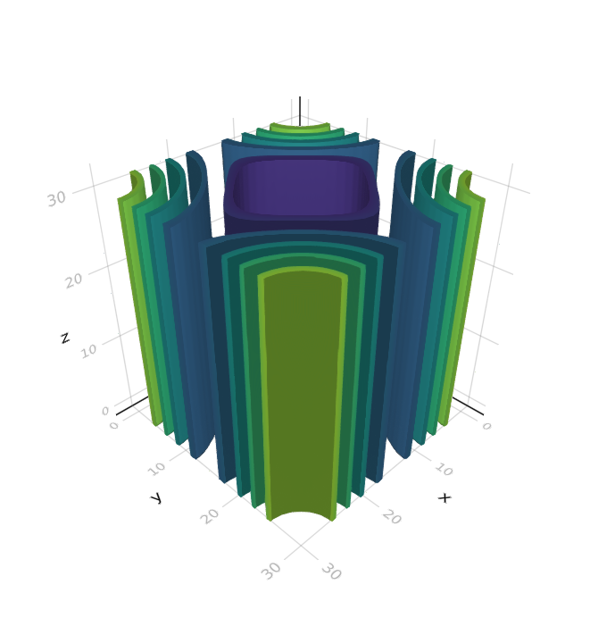
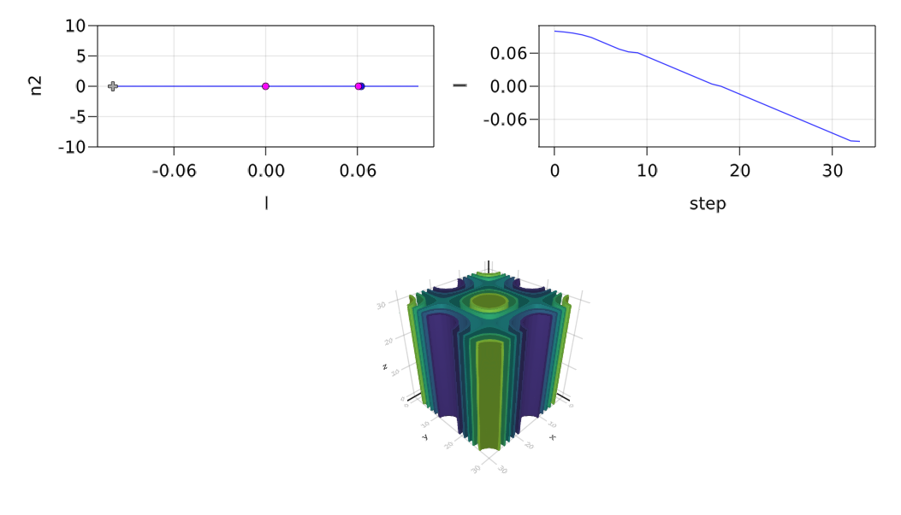
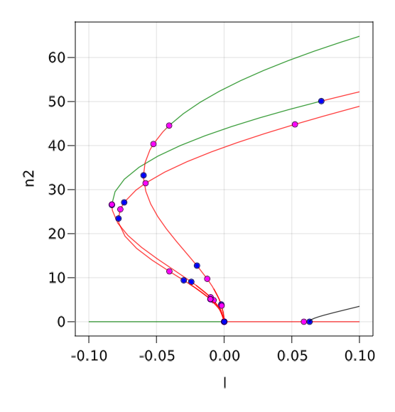
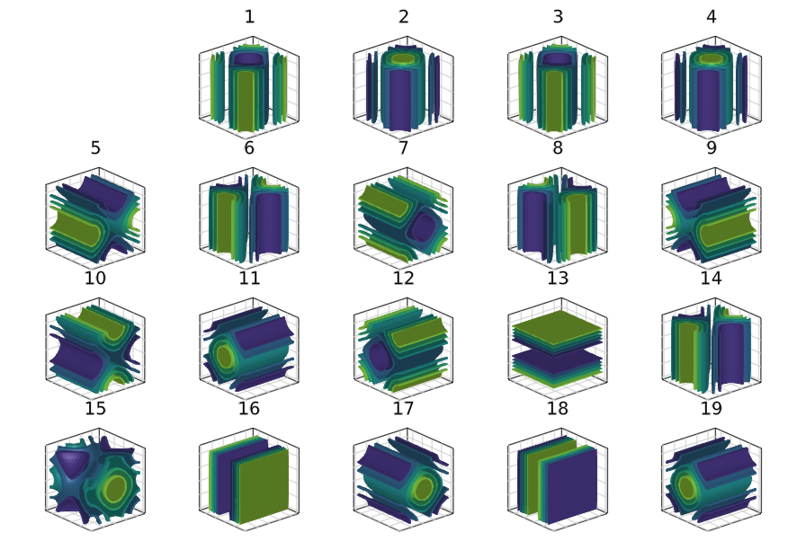

🟠 3d Swift-Hohenberg equation, Finite differences
This example is challenging because we cannot employ the easy to use \ sparse linear solver which takes too much time/memory to do the LU decomposition. Hence, one has to be tricky to devise a preconditioned linear solver that does not explode the memory budget. But then, one has to also devise a specific eigensolver. This is done in this tutorial. It also shows how this can be used for automatic branch switching. Hence, if you are not happy with the linear / eigen solvers in BifurcationKit.jl, this is perhaps the example you are looking for.
We look at the following PDE on a 3d domain, e.g. a cube:
\[-(I+\Delta)^2 u+l\cdot u +\nu u^2-u^3 = 0\tag{E}\]
with Neumann boundary conditions. We use a Sparse Matrix to express the operator $L_1\equiv(I+\Delta)^2$. However, compared to the 2d case (see 2d Swift-Hohenberg equation: snaking), we cannot use directly \ to solve linear systems because the LU décomposition is a bit slow, it uses a lot of memory.
We start by defining the associated functional to encode (E).
using Revise, KrylovKitusing GLMakie # must be imported before BifurcationKit to trigger some importsusing BifurcationKitusing LinearAlgebra, SparseArrays, LinearMapsconst BK = BifurcationKitfunction Laplacian3D(Nx, Ny, Nz, lx, ly, lz) speye(n) = sparse(I, n, n) hx = 2lx/Nx hy = 2ly/Ny hz = 2lz/Nz D2x = spdiagm(0 => -2ones(Nx), 1 => ones(Nx-1), -1 => ones(Nx-1) ) / hx^2 D2y = spdiagm(0 => -2ones(Ny), 1 => ones(Ny-1), -1 => ones(Ny-1) ) / hy^2 D2z = spdiagm(0 => -2ones(Nz), 1 => ones(Nz-1), -1 => ones(Nz-1) ) / hz^2 D2x[1,1] = -1/hx^2 D2x[end,end] = -1/hx^2 D2y[1,1] = -1/hy^2 D2y[end,end] = -1/hy^2 D2z[1,1] = -1/hz^2 D2z[end,end] = -1/hz^2 D2xsp = sparse(D2x) D2ysp = sparse(D2y) D2zsp = sparse(D2z) _A = kron(speye(Ny), D2xsp) + kron(D2ysp, speye(Nx)) A = kron(speye(Nz), _A) + kron(kron(D2zsp, speye(Ny)), speye(Nx)) return A, D2xend# main functionalfunction F_sh(u, p) (;l, ν, L1) = p return -(L1 * u) .+ (l .* u .+ ν .* u.^2 .- u.^3)end# differential of the functionalfunction dF_sh(u, p, du) (;l, ν, L1) = p return -(L1 * du) .+ (l .+ 2 .* ν .* u .- 3 .* u.^2) .* duend# various differentialsd2F_sh(u, p, dx1, dx2) = (2 .* p.ν .* dx2 .- 6 .* dx2 .* u) .* dx1d3F_sh(u, p, dx1, dx2, dx3) = (-6 .* dx2 .* dx3) .* dx1# these types are useful to switch to GPUTY = Float64AF = Array{TY}Plotting with Makie
In most tutorials, we have used Plots.jl for the figures. However, it appears that Makie.jl is more convenient for 3d plots. We thus define the following convenience functions to display the solutions of (E).
contour3dMakie(x; k...) = GLMakie.contour(x; k...)contour3dMakie(x::AbstractVector; k...) = contour3dMakie(reshape(x,Nx,Ny,Nz); k...)contour3dMakie(ax, x; k...) = (GLMakie.contour!(ax, x; k...))contour3dMakie(ax, x::AbstractVector; k...) = contour3dMakie(ax, reshape(x,Nx,Ny,Nz); k...)contour3dMakie!(ax, x; k...) = (GLMakie.contour!(ax, x; k...))contour3dMakie!(ax, x::AbstractVector; k...) = contour3dMakie!(ax, reshape(x,Nx,Ny,Nz); k...)Setting up the problem
We provide the parameters defining the PDE:
Nx = Ny = Nz = 22; N = Nx*Ny*Nzlx = ly = lz = piX = -lx .+ 2lx/(Nx) * collect(0:Nx-1)Y = -ly .+ 2ly/(Ny) * collect(0:Ny-1)Z = -lz .+ 2lz/(Nz) * collect(0:Nz-1)# initial guess for newtonsol0 = [(cos(x) .* cos(y )) for x in X, y in Y, z in Z]sol0 .= sol0 .- minimum(vec(sol0))sol0 ./= maximum(vec(sol0))sol0 .*= 1.7# parameters for PDEΔ, D2x = Laplacian3D(Nx, Ny, Nz, lx, ly, lz);L1 = (I + Δ)^2;par = (l = 0.1, ν = 1.2, L1 = L1);Choice of linear solver
Let us run a quick benchmark to evaluate the direct linear solvers:
julia> @time cholesky(Symmetric(L1)) \ vec(sol0); 0.069329 seconds (67 allocations: 85.233 MiB)julia> @time lu(L1) \ vec(sol0); 0.193397 seconds (91 allocations: 225.885 MiB, 0.81% gc time)julia> @time qr(L1) \ vec(sol0); 0.652569 seconds (206 allocations: 988.797 MiB, 1.44% gc time)Hence, cholesky is the big winner but it requires a positive matrix so let's see how to do that.
As said in the introduction, the LU linear solver does not scale well with dimension $N$. Hence, we do something else. We note that the matrix $L_1$ is hermitian positive and use it as a preconditioner. Thus, we pre-factorize it using a Cholesky decomposition:
Pr = cholesky(Symmetric(L1));using SuiteSparse# we need this "hack" to be able to use Pr as a preconditioner.LinearAlgebra.ldiv!(o::Vector, P::SuiteSparse.CHOLMOD.Factor{Float64}, v::Vector) = o .= (P \ v)# rtol must be small enough to pass the Fold points and to get precise eigenvalues# we know that the jacobian is symmetric so we tell the solverls = GMRESKrylovKit(verbose = 0, rtol = 1e-9, maxiter = 150, Pl = Pr)Let's try this on a Krylov-Newton computation to refine the guess sol0:
prob = BifurcationProblem(F_sh, AF(vec(sol0)), par, (@optic _.l), J = (x, p) -> (dx -> dF_sh(x, p, dx)), plot_solution = (ax, x, p; ax1) -> contour3dMakie(ax, x), issymmetric = true, # so we dont need to provide the adjoint (normal form) record_from_solution = (x, p; k...) -> (n2 = norm(x), n8 = norm(x, 8)))optnew = NewtonPar(verbose = true, tol = 1e-8, max_iterations = 20, linsolver = ls)sol_hexa = @time BK.solve(prob, Newton(), optnew)which gives
┌─────────────────────────────────────────────────────┐│ Newton step residual linear iterations │├─────────────┬──────────────────────┬────────────────┤│ 0 │ 2.6003e+02 │ 0 ││ 1 │ 1.5414e+02 │ 25 ││ 2 │ 2.6040e+02 │ 21 ││ 3 │ 7.3531e+01 │ 21 ││ 4 │ 2.0513e+01 │ 23 ││ 5 │ 6.4608e+00 │ 18 ││ 6 │ 1.3743e+00 │ 18 ││ 7 │ 1.7447e-01 │ 17 ││ 8 │ 4.0924e-03 │ 17 ││ 9 │ 2.4048e-06 │ 17 ││ 10 │ 1.8389e-10 │ 17 │└─────────────┴──────────────────────┴────────────────┘ 0.472765 seconds (13.97 k allocations: 134.073 MiB, 1.91% gc time, 0.00% compilation time)and contour3dMakie(sol_hexa.u) produces

Continuation and bifurcation points
We now switch gears and compute the stability of the trivial solution $u=0$. We will then branch from the detected bifurcation points. However, we wish to show an example of computation of eigenvalues based on a custom preconditioned Shift-Invert strategy.
We thus define our eigensolver based on the previously defined pre-conditioned linear solver ls:
# structure to hold eigensolverstruct SH3dEig{Ts, Tσ} <: BK.AbstractEigenSolver # linear solver used for Shift-Invert strategy ls::Ts # shift of the linear operator σ::Tσend# function to extract eigenvectors, used for automatic branch switchingBifurcationKit.geteigenvector(eigsolve::SH3dEig, vecs, n::Union{Int, Array{Int64,1}}) = vecs[n]# implementation of Shift-invert strategyfunction (sheig::SH3dEig)(J, nev::Int; verbosity = 0, kwargs...) σ = sheig.σ nv = 30 Jshift = du -> J(du) .- σ .* du A = du -> sheig.ls(Jshift, du)[1] # we adapt the krylov dimension as function of the requested eigenvalue number vals, vec, info = KrylovKit.eigsolve(A, AF(rand(Nx*Ny*Nz)), nev, :LM; tol = 1e-12, maxiter = 20, verbosity = verbosity, ishermitian = true, krylovdim = max(nv, nev + nv)) vals2 = 1 ./vals .+ σ Ind = sortperm(vals2, by = real, rev = true) return vals2[Ind], vec[Ind], true, info.numopsendWe can then declare our eigensolver and pass it to the newton parameters
eigSH3d = SH3dEig((@set ls.rtol = 1e-9), 0.1)@reset optnew.eigsolver = eigSH3dWe are now ready to perform continuation and detection of bifurcation points:
optcont = ContinuationPar(dsmin = 0.0001, dsmax = 0.005, ds= -0.001, p_max = 0.15, p_min = -.1, newton_options = setproperties(optnew; tol = 1e-9, max_iterations = 15), max_steps = 146, detect_bifurcation = 3, nev = 15, n_inversion = 4, plot_every_step = 1)br = continuation( re_make(prob, u0 = zeros(N)), # we use a particular bordered linear solver to # take advantage of our specific linear solver PALC(bls = BorderingBLS(solver = optnew.linsolver, check_precision = false)), optcont; normC = x -> norm(x, Inf), plot = true, verbosity = 3)The following result shows the detected bifurcation points (its takes ~300s)
julia> brBranch number of points: 34Branch of EquilibriumParameters l from 0.1 to -0.1Bifurcation points: (ind_ev = index of the bifurcating eigenvalue e.g. `br.eig[idx].eigenvals[ind_ev]`)- # 1, bp at l ≈ +0.06243495 ∈ (+0.06243495, +0.06287689), |δp|=4e-04, [converged], δ = (-1, 0), step = 8, eigenelements in eig[ 9], ind_ev = 10- # 2, nd at l ≈ +0.06069653 ∈ (+0.06069653, +0.06069826), |δp|=2e-06, [converged], δ = (-6, 0), step = 9, eigenelements in eig[ 10], ind_ev = 9- # 3, nd at l ≈ -0.00007046 ∈ (-0.00007046, +0.00015051), |δp|=2e-04, [converged], δ = (-3, 0), step = 18, eigenelements in eig[ 19], ind_ev = 3We get the following plot during computation:

Automatic branch switching
We can use Branch switching to compute the different branches emanating from the bifurcation points. For example, the following code will perform automatic branch switching from the last bifurcation point of br. Note that this bifurcation point is 3d.
br1 = @time continuation(br, 3, setproperties(optcont; save_sol_every_step = 10, detect_bifurcation = 0, p_max = 0.1, plot_every_step = 5, dsmax = 0.02); plot = true, verbosity = 3, # to set initial point on the branch δp = 0.01, # remove display of deflated newton iterations verbosedeflation = false, alg = PALC(tangent = Bordered(), bls = BorderingBLS(solver = optnew.linsolver, check_precision = false)), normC = norminf)We can then plot the branches using BK.plot(br, br1...) where green (resp. red) means stable (resp. unstable) solution.

There are 19 branches that were discovered. You can plot the solutions on the branches using
fig = Figure(resolution = (1200, 900)) for i=1:length(br1) ix = div(i,5)+1; iy = i%5+1 @show i, ix, iy ax = Axis3(fig[ix, iy], title = "$i", aspect = (1, 1, 1)) hidedecorations!(ax, grid=false) contour3dMakie!(ax, br1[i].sol[2].x) ax.protrusions = (0, 0, 0, 10) end display(fig)